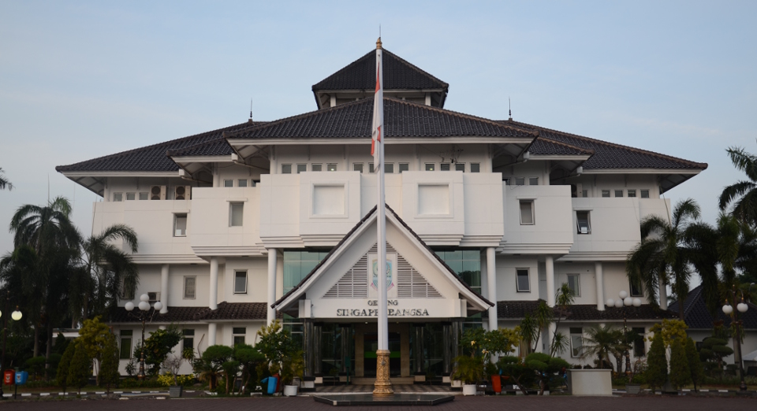
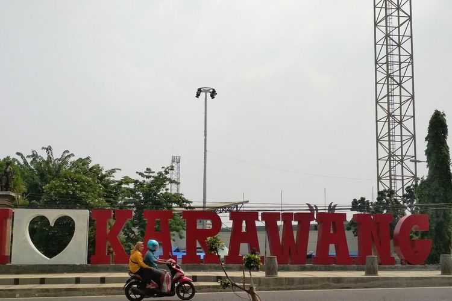
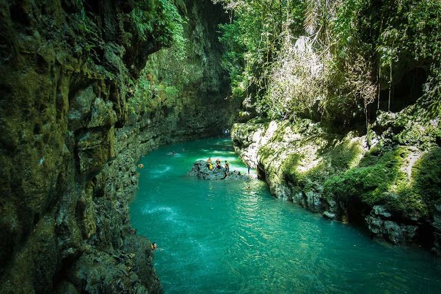
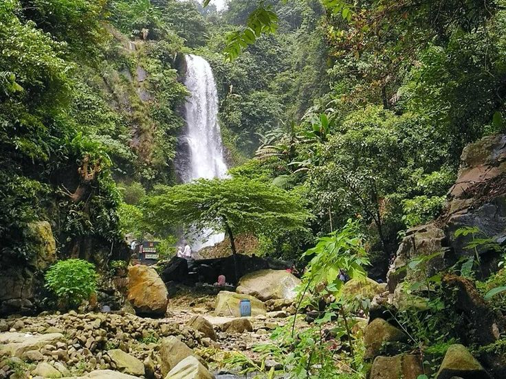

Sejarah

Karawang adalah sebuah kabupaten dan kota di Provinsi Jawa Barat, Indonesia. Daerah ini terkenal karena signifikansi industri, menjadi pusat utama manufaktur dan industri di Indonesia. Dengan lokasinya yang strategis dekat dengan Jakarta dan akses ke rute transportasi utama, Karawang telah menarik banyak perusahaan multinasional dan kawasan industri.Beberapa industri utama di Karawang termasuk manufaktur otomotif, elektronik, tekstil, dan pengolahan makanan. Keberadaan kawasan industri seperti Karawang International Industrial City (KIIC) dan Suryacipta City of Industry telah berkontribusi pada pertumbuhan dan perkembangan ekonomi di daerah ini.
Kota Karawang sendiri berfungsi sebagai pusat administratif dan pusat komersial untuk daerah sekitarnya. Kota ini menawarkan berbagai fasilitas seperti pusat perbelanjaan, hotel, restoran, dan lembaga pendidikan.Dalam beberapa tahun terakhir, upaya telah dilakukan untuk mempromosikan pariwisata di Karawang, menyoroti warisan budaya dan atraksi alam seperti Gunung Ceremai dan Sungai Citarum. Selain itu, pembangunan infrastruktur bertujuan untuk meningkatkan transportasi dan aksesibilitas untuk mendukung pertumbuhan ekonomi daerah ini.
Geografis

Karawang, sebuah kabupaten yang terletak di bagian barat Provinsi Jawa Barat, Indonesia, memiliki ciri geografis yang menarik. Secara topografi, sebagian besar wilayahnya cenderung datar, dengan beberapa ketinggian rendah, meskipun terdapat pegunungan di bagian selatan seperti Gunung Karacak dan Gunung Sanggabuana. Sungai Citarum, yang merupakan sungai terbesar di wilayah ini, memainkan peran penting dalam irigasi pertanian dan kehidupan sehari-hari masyarakat. Wilayah pesisir di sebelah utara Karawang menghadap Laut Jawa, memberikan potensi bagi pengembangan pariwisata pantai.
Sementara itu, di bagian timur dan tenggara, terdapat kawasan industri yang luas, mencerminkan peran penting Karawang sebagai pusat industri di Jawa Barat. Karawang menikmati iklim tropis basah dengan dua musim utama, yaitu musim hujan dan musim kemarau, dengan suhu rata-rata yang cukup stabil sepanjang tahun. Kombinasi dari karakteristik geografis ini memberikan Karawang identitas yang unik dan beragam, serta menawarkan potensi bagi pengembangan ekonomi, pariwisata, dan pertanian di wilayah ini.
wisata
Karawang menawarkan beragam destinasi wisata yang menarik, baik alam maupun budaya. Beberapa tempat wisata yang populer di Karawang
Green Canyon Karawang

Bila Disebutkan nama Wisata Green Canyon pasti yang terlintas di benak anda adalah wisata yang indah yang ada di daerah ciamis pangandaran jawa barat, Meski tidak sebagus yang disana, siapa sangka Kabupaten Karawang memiliki wisata alam yang hampir serupa dan dibilang cukup bagus. Keberadaan Green Canyon, yang oleh masyarakat setempat dikenal dengan sebutan Green Canyon Ciomas. Bentuknya yang mini, menjadikan wisata ini layak untuk di kunjungi.
Curug Cigentis

Curug Cigentis salah satu curug atau air terjun yang ada di Karawang dengan memiliki tinggi sekitar 25 meter, lokasinya berada di bawah kaki Gunung Sanggabuana.Aliran air dari Curug Cigentis tak pernah surut sekalipun di musim kemarau, jika musim hujan tiba pun airnya tidak berubah warna tetap bersih dan jernih.